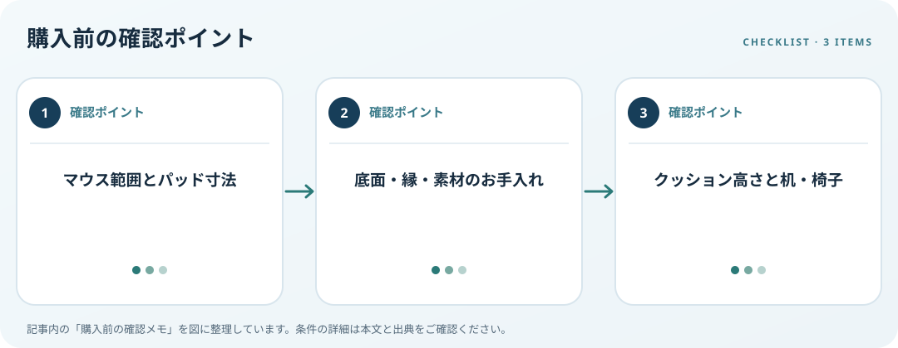

必要な操作範囲、机との相性、表面のお手入れ、支持具の有無を確認します。この記事では仕様の確認順を整理します。

操作面と机の広さを測る
マウスを普段動かす範囲、キーボード幅、机の空き場所を測り、パッドの寸法と比べます。一体型の大型品では、キーボードの脚や机の段差、モニター台との干渉も確認します。素材や縁の仕上げは製品仕様で比較し、センサーとの相性を未確認のまま断定しません。
底面と清掃を確認
パッドの裏面が机の材質に合うか、机面に凹凸や傾きがないかを見ます。縫い目や厚みが机の縁に重なると手の置き方に影響する場合があります。洗える表示がある場合も、洗浄方法と乾燥条件はメーカー案内に従います。
リストレストと配置を考える
クッション付きの場合、キーボード高さやマウス操作中の手の動きと合うか確認します。OSHAは手首支持具をキーボードやマウスと合わせた作業環境として扱っています。クッションがあるだけで健康効果が得られると決めつけず、机と椅子も含む配置で選びましょう。
購入前の確認メモ
- マウス範囲とパッド寸法
- 底面・縁・素材のお手入れ
- クッション高さと机・椅子
この記事は出典の公開情報を購入前の確認項目に整理したもので、特定商品の使用・実測・レビュー・ランキング・価格・在庫の調査は行っていません。購入時には利用機器メーカーの最新仕様をご確認ください。
出典
- Pointer/Mouse — OSHA（確認日: 2026-10-10）
- Wrist/Palm Supports — OSHA（確認日: 2026-10-10）
- Change mouse settings — Microsoft（確認日: 2026-10-10）